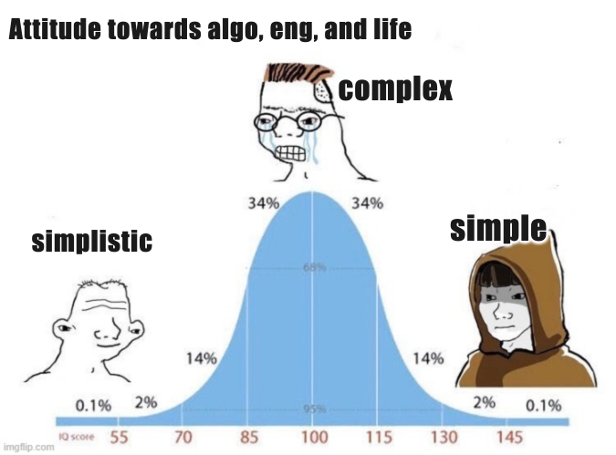
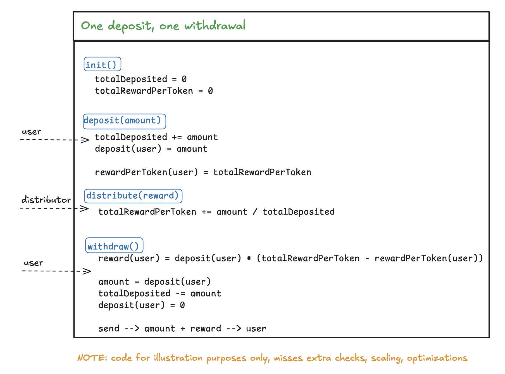
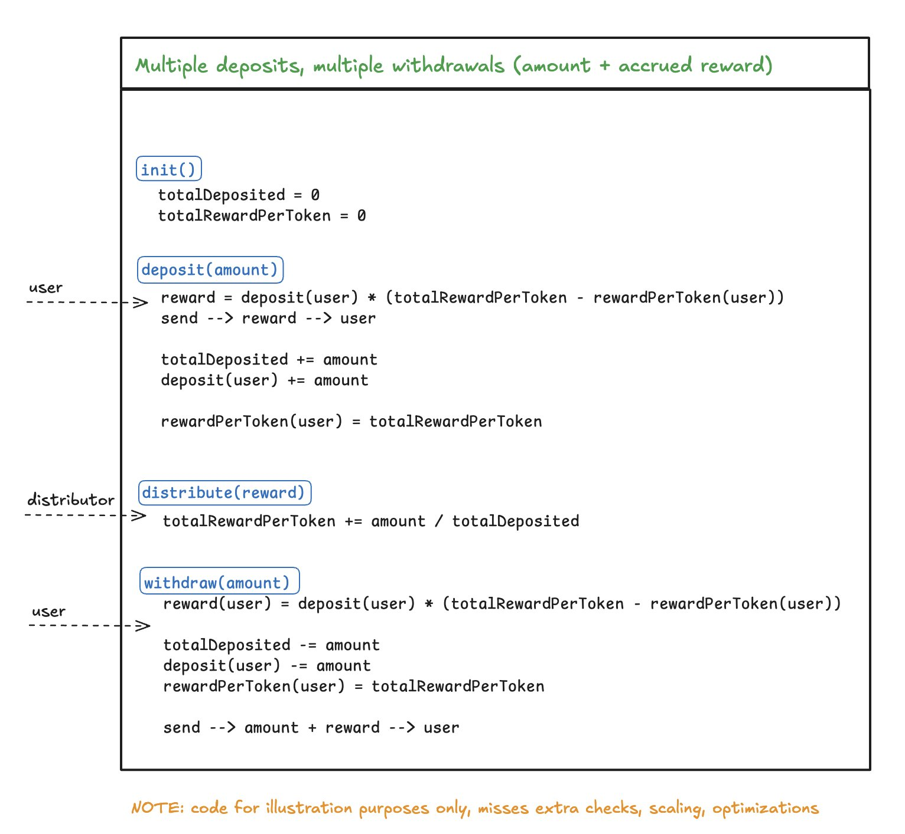

Simple is way more than simplistic. Many white papers in the DeFi space seem to be written more to impress than to educate. Curious readers often find themselves lost in a sea of advanced mathematical formulas filled with Greek symbols. Instead of gaining clarity, they leave the experience feeling more confused and less confident than when they began. Fortunately, the reality of building protocols is often different. It is based on a few fundamentally simple — though not simplistic — algorithms. These DeFi primitives power multi-billion-dollar protocols and have become essential tools in the DeFi engineer’s toolkit.

A Billion-Dollar Algorithm
A prime example is an algorithm that eventually earned the name ‘billion-dollar algorithm’ and became the de facto standard for staking rewards contracts. It has become so ubiquitous in the space that it is often used without a second thought, sometimes without even realizing it’s in play. This algorithm solves the common challenge of distributing token rewards among users based on their pro-rata deposits / stakes.
It all began with the Scalable Reward Distribution on the Ethereum Blockchain whitepaper, written in 2018 for DappCon by Bogdan Batog, Lucian Boca, and Nick Johnson. The whitepaper defined the distinction between ‘Pull’ and ‘Push’ reward distribution mechanisms, explaining why the Push mechanism is impractical for blockchains and how to implement the Pull model effectively. Let’s define the difference:
- Push — In this model, rewards are explicitly distributed to users by iterating over all their addresses, calculating a reward for each, and either sending or storing the reward for future claims. As the name suggests, rewards are ‘pushed’ to users without their interaction. While this approach is common in Web2 engineering, it is impractical in Web3. As the number of users grows, the distributor faces unrealistic transaction costs.
- Pull — In this model, distributors send the total reward amount to a distribution contract, but the actual reward calculations and claims are done by each user individually. Users interact with the protocol to calculate and retrieve their pro-rata share of the reward, meaning they bear the gas cost for the calculations and transfers. Users ‘pull’ their rewards, making this model scalable and cost-effective for the distributor and in general.
Core Logic
A simplified version of the algorithm where a user is allowed to deposit and withdraw only once.

A more practical version allows users to deposit and withdraw multiple times. Rewards are calculated and distributed before any changes are made to the eligible reward amount (i.e., before each deposit or withdrawal).

History of Adoption
It is everywhere, literally. The first liquidity mining program where rewards were computed on-chain was SNX’s incentive for the sETH Uniswap pool. This was implemented in the Unipool sETH contract, written in 2019 by Anton Bukov. [2]
Today, the algorithm is used by many projects in the Ethereum ecosystem. For example, Uniswap v3 uses it to track fees earned by individual positions, SushiSwap uses it in its MasterChef smart contract to incentivize liquidity providers, and 1inch has adapted it as part of their ERC20Plugins concept to allow farming without a need to stake tokens. [3]
The simplest conceptual implementations I would like to refer: Solidity By Example: Staking rewards, Solidity By Example: Discrete Staking rewards. The widespread popularity and adoption of the algorithm place it among the top DeFi primitives, continually proving that simple is way more than simplistic.